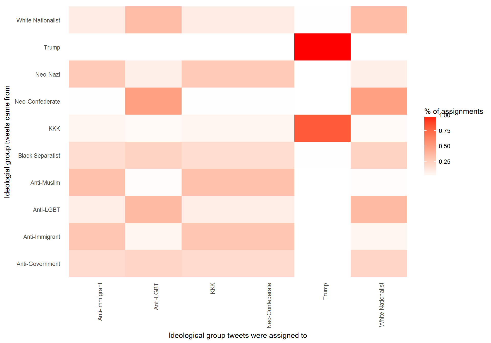

Donald Trump Twitter Analysis
Ryan Buckner, Raiyan Kabir, Mariam Ghavalyan, Chinmaya Holla
This where we an intro would go. Texty Text Text
Relationships Between Words
TextTextTextTextTextTextTextText
## # A tibble: 177,497 × 2
## bigram n
## <chr> <int>
## 1 of the 1424
## 2 thank you 1396
## 3 will be 1333
## 4 in the 1116
## 5 is a 947
## 6 donald trump 897
## 7 a great 839
## 8 for the 711
## 9 to be 702
## 10 for president 691
## # ... with 177,487 more rowsText Text Text TEXT ABOUT GRAPH ABOVE
Section Title
texttexttexttexttexttexttext
Religious groups  graph description
graph description
Politicians graph description
Policies graph description
Section Title
TextTextTextText
TextTextTextTextTextText  Explanation of graph
Explanation of graph
Topic Modeling
TextTextTextText  Explanation of graph
Explanation of graph
Per Document Classification
## # A tibble: 71 × 4
## group_id chapter topic gamma
## <chr> <int> <int> <dbl>
## 1 Anti-Government 3 1 0.9999510
## 2 Anti-LGBT 4 1 0.9683443
## 3 Anti-LGBT 9 1 0.4517697
## 4 White Nationalist 5 1 0.9998670
## 5 Anti-LGBT 3 1 0.5497992
## 6 Anti-Muslim 4 1 0.9492134
## 7 Neo-Nazi 7 2 0.9999491
## 8 Anti-Immigrant 2 2 0.9999645
## 9 Anti-Immigrant 6 2 0.9999646
## 10 Anti-Immigrant 1 2 0.6123448
## # ... with 61 more rows## # A tibble: 88 × 5
## group_id chapter topic gamma consensus
## <chr> <int> <int> <dbl> <chr>
## 1 Neo-Nazi 7 2 0.9999491 Anti-Immigrant
## 2 Neo-Nazi 7 2 0.9999491 KKK
## 3 Neo-Nazi 7 2 0.9999491 Neo-Confederate
## 4 Anti-Immigrant 2 2 0.9999645 KKK
## 5 Anti-Immigrant 2 2 0.9999645 Neo-Confederate
## 6 Anti-Immigrant 6 2 0.9999646 KKK
## 7 Anti-Immigrant 6 2 0.9999646 Neo-Confederate
## 8 Anti-Immigrant 1 2 0.6123448 KKK
## 9 Anti-Immigrant 1 2 0.6123448 Neo-Confederate
## 10 Black Separatist 3 2 0.4254101 Anti-Immigrant
## # ... with 78 more rowsExplanation of graph 
## # A tibble: 111,411 × 4
## title consensus term n
## <chr> <chr> <chr> <dbl>
## 1 Anti-Government Anti-LGBT gun 926
## 2 Anti-Government White Nationalist gun 926
## 3 Anti-Muslim Anti-Immigrant muslim 614
## 4 Anti-Muslim KKK muslim 614
## 5 Anti-Muslim Neo-Confederate muslim 614
## 6 Anti-LGBT White Nationalist god 454
## 7 Anti-Muslim Anti-Immigrant trump 324
## 8 Anti-Muslim KKK trump 324
## 9 Anti-Muslim Neo-Confederate trump 324
## 10 Anti-Government Anti-Immigrant trump 319
## # ... with 111,401 more rows